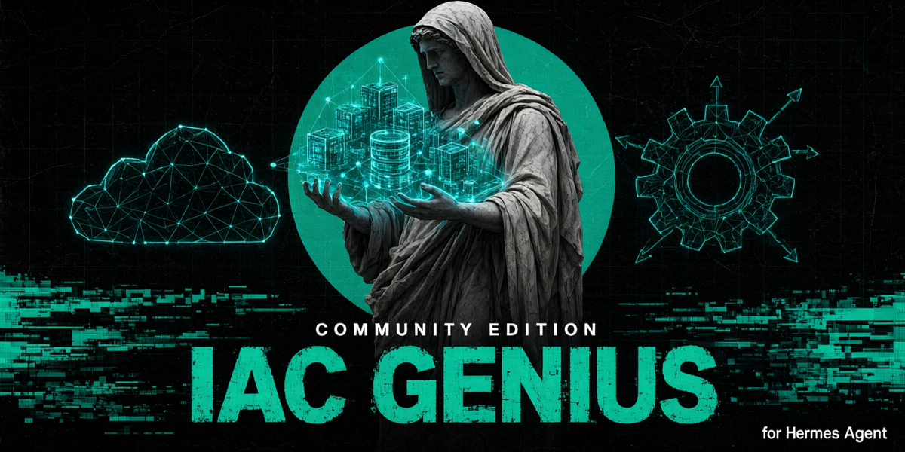
IaCGenius writes the Terraform (or OpenTofu), runs the real validators over it, fixes what it can within a fixed budget, and hands you a pull request whose body is the decision ledger. Everything below is captured from a live installation — not a mockup.
The idea
Most code generators ask you to trust the model. IaCGenius splits the work so you don't have to: the model proposes, a deterministic desk proves, and you decide.
A small credential-less service owns the decision ledger, runs terraform validate, tflint, checkov and a secret scan, and keeps the evidence. No model output is trusted as a validation result.
validate + secret scan are hard gates — they must pass. tflint / checkov / fmt are soft choices you accept by name or fix. A scanner that didn't run is NOT_RUN, never PASS.
One mission, one folder: the .tf code plus a work/ record of what was decided and who decided it. The filesystem is the source of truth; a lost folder is forgotten, not a stale row.
How it is built
A pinned Hermes container holds the agent, its skills and the desk plugin — no cloud credentials, never applies. The deterministic desk runs as a credential-less host service. External capability comes from the Hermes ecosystem's MCPs, not re-implemented code.
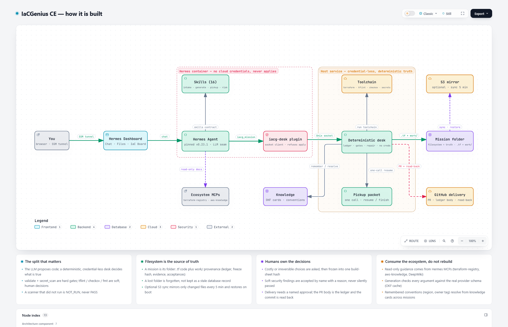
How a mission runs
Intake asks only the costly or irreversible questions, freezes the scope into one hash, generates schema-grounded code, then validates. Hard failures trigger a bounded repair loop; soft findings come to you. Delivery needs a named human approval.
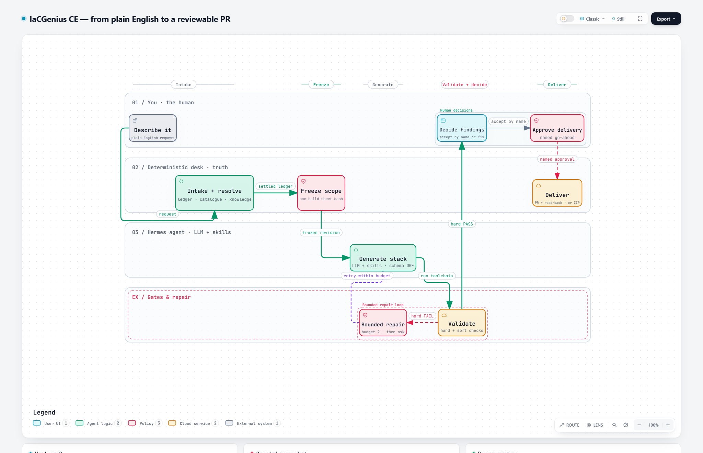
Captured from a running installation
The dashboard has three surfaces: Chat to talk to IaCGenius, the IaC Board to watch missions, and Files to read and download the code. These are real screenshots.
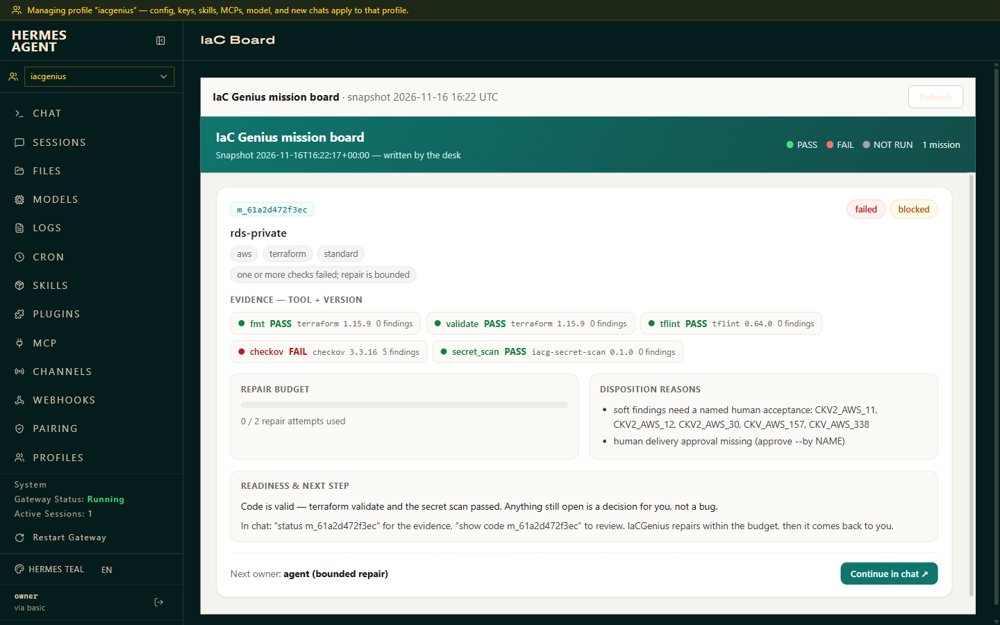
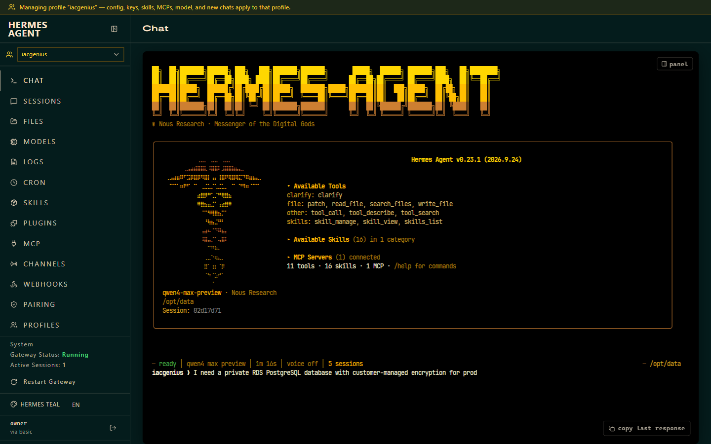
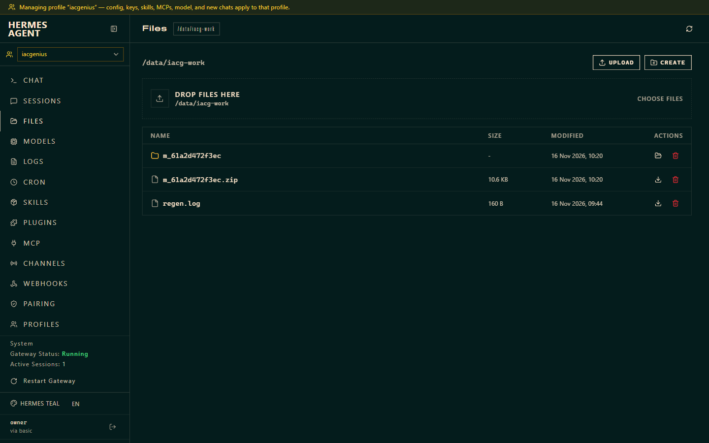
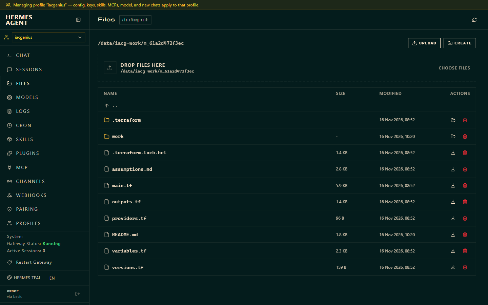
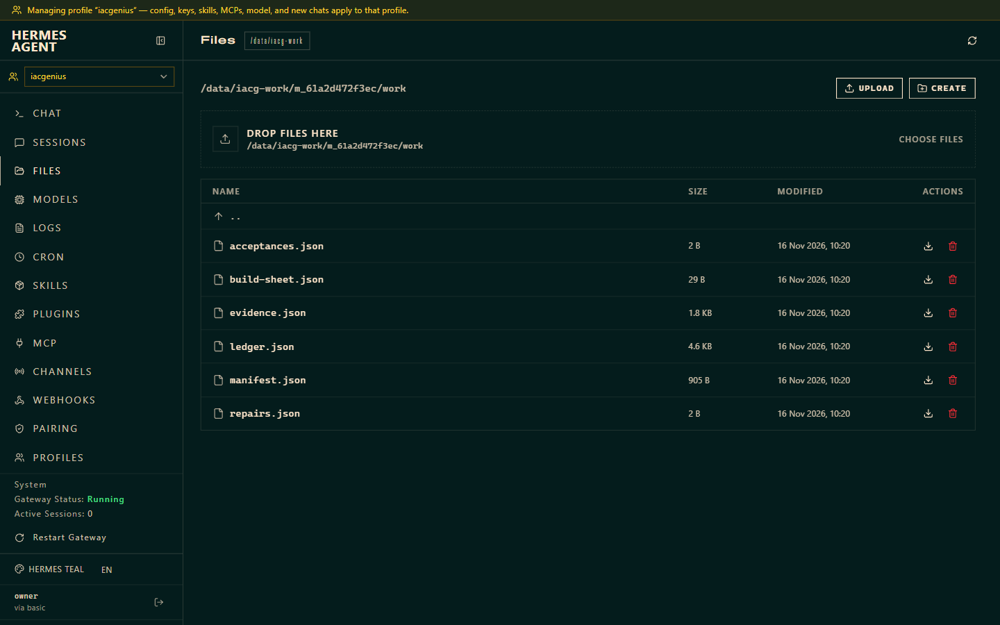
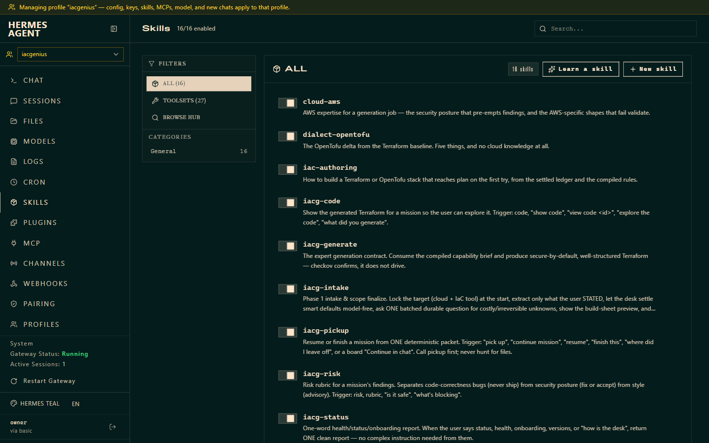
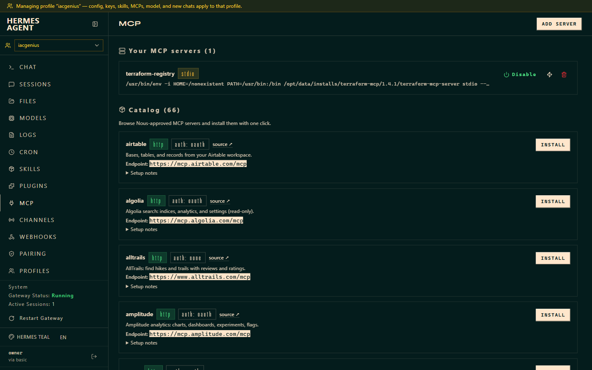
A real mission, end to end
Mission m_61a2d472f3ec — “a private RDS PostgreSQL database with customer-managed encryption for prod.” Here is exactly what the desk recorded.
| Check | Tool · version | Result | Kind |
|---|---|---|---|
| validate | terraform 1.15.9 | PASS | hard gate |
| secret_scan | iacg-secret-scan 0.1.0 | PASS | hard gate |
| tflint | tflint 0.64.0 | PASS | soft |
| fmt | terraform 1.15.9 | PASS | soft |
| checkov | checkov 3.3.16 | FAIL · 5 | soft · your call |
CKV_AWS_157) is a human accept-or-revise decision — the generated code even says so in a comment, rather than silently flipping it.The owner tag platform-team was declared once as a knowledge card. The generated stack carries it straight into the tags — no re-asking:
locals { common_tags = { Project = "iacg-rds-private" Environment = "prod" ManagedBy = "iacg-ce" Owner = "platform-team" # <- resolved from a knowledge card } }
A customer-managed KMS key with a scoped policy (RDS and CloudWatch Logs get exactly the crypto actions they need), private subnets, a VPC-only security group, enhanced monitoring, deletion protection, and a managed master password — never a literal secret:
resource "aws_db_instance" "main" { engine = "postgres" storage_encrypted = true kms_key_id = aws_kms_key.rds.arn manage_master_user_password = true # secret managed by AWS, not written here publicly_accessible = false deletion_protection = true multi_az = false # settled ledger: single_zone (CKV_AWS_157 is your call) }
Kept safe, survives change
The folder is the truth. An optional incremental S3 sync mirrors only changed files every 5 minutes and restores on boot — so a replacement instance picks up where the last one left off. pickup returns one packet to resume; package zips the folder to carry it.
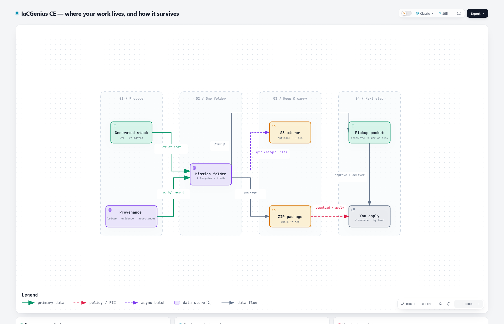
Run your own
One EC2 instance in an Auto Scaling group, a private S3 bucket, SSM-only access. Prefer a persistent (on-demand) instance; enable the optional S3 sync if you run on Spot.
local.tfvars (account, subnet, source zip, model key in Secrets Manager), then terraform apply in deploy/aws-single. First boot pulls the pinned Hermes image and installs the toolchain.127.0.0.1:9126; the login is in /data/hermes/iacgenius-login.json. Ask IaCGenius to onboard once to warm the provider cache.package a ZIP. Apply it yourself, elsewhere.